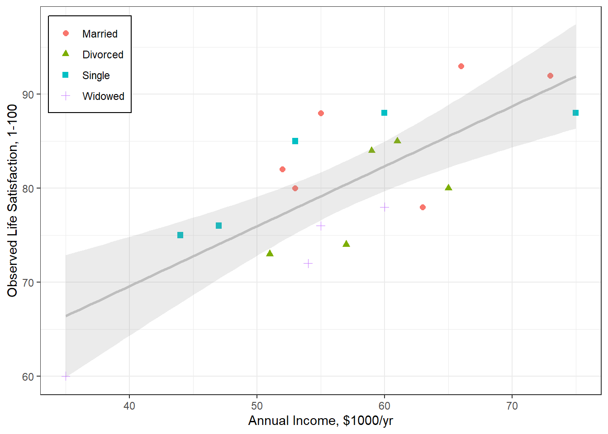

10 Ex: Cancer Experiment
# install.packages("remotes")
# remotes::install_github("sarbearschwartz/apaSupp")
# remotes::install_github("ddsjoberg/gtsummary")
library(magrittr)
library(tidyverse)
library(broom)
library(naniar)
library(corrplot)
library(GGally)
library(gtsummary)
library(apaSupp)
library(performance)
library(interactions)
library(effects)
library(emmeans)
library(car)
library(ggResidpanel)
library(modelsummary)
library(ppcor)
library(jtools)
library(olsrr)
library(DescTools)
library(effectsize)
library(ggpubr)10.1 PURPOSE
10.1.2 Data Description
The Cancer data set contains 4 repeated measure of oral condition for 25 cancer patients to see if an aloe treatment helps with oral condition (ulcers).
cancer_raw <- haven::read_spss("https://raw.githubusercontent.com/CEHS-research/eBook_ANOVA/master/data/Cancer.sav")Rows: 25
Columns: 9
$ ID <dbl> 1, 5, 6, 9, 11, 15, 21, 26, 31, 35, 39, 41, 45, 2, 12, 14, 16…
$ TRT <dbl> 0, 0, 0, 0, 0, 0, 0, 0, 0, 0, 0, 0, 0, 0, 1, 1, 1, 1, 1, 1, 1…
$ AGE <dbl> 52, 77, 60, 61, 59, 69, 67, 56, 61, 51, 46, 65, 67, 46, 56, 4…
$ WEIGHIN <dbl> 124.0, 160.0, 136.5, 179.6, 175.8, 167.6, 186.0, 158.0, 212.8…
$ STAGE <dbl> 2, 1, 4, 1, 2, 1, 1, 3, 1, 1, 4, 1, 1, 2, 4, 1, 2, 1, 4, 2, 1…
$ TOTALCIN <dbl> 6, 9, 7, 6, 6, 6, 6, 6, 6, 6, 7, 6, 8, 7, 6, 4, 6, 6, 12, 5, …
$ TOTALCW2 <dbl> 6, 6, 9, 7, 7, 6, 11, 11, 9, 4, 8, 6, 8, 16, 10, 6, 11, 7, 11…
$ TOTALCW4 <dbl> 6, 10, 17, 9, 16, 6, 11, 15, 6, 8, 11, 9, 9, 9, 11, 8, 11, 6,…
$ TOTALCW6 <dbl> 7, 9, 19, 3, 13, 11, 10, 15, 8, 7, 11, 6, 10, 10, 9, 7, 14, 6…cancer_clean <- cancer_raw %>%
dplyr::rename_all(tolower) %>%
dplyr::mutate(id = factor(id)) %>%
dplyr::mutate(trt = factor(trt,
labels = c("Placebo",
"Aloe Juice"))) %>%
dplyr::mutate(stage = factor(stage))
tibble::glimpse(cancer_clean)Rows: 25
Columns: 9
$ id <fct> 1, 5, 6, 9, 11, 15, 21, 26, 31, 35, 39, 41, 45, 2, 12, 14, 16…
$ trt <fct> Placebo, Placebo, Placebo, Placebo, Placebo, Placebo, Placebo…
$ age <dbl> 52, 77, 60, 61, 59, 69, 67, 56, 61, 51, 46, 65, 67, 46, 56, 4…
$ weighin <dbl> 124.0, 160.0, 136.5, 179.6, 175.8, 167.6, 186.0, 158.0, 212.8…
$ stage <fct> 2, 1, 4, 1, 2, 1, 1, 3, 1, 1, 4, 1, 1, 2, 4, 1, 2, 1, 4, 2, 1…
$ totalcin <dbl> 6, 9, 7, 6, 6, 6, 6, 6, 6, 6, 7, 6, 8, 7, 6, 4, 6, 6, 12, 5, …
$ totalcw2 <dbl> 6, 6, 9, 7, 7, 6, 11, 11, 9, 4, 8, 6, 8, 16, 10, 6, 11, 7, 11…
$ totalcw4 <dbl> 6, 10, 17, 9, 16, 6, 11, 15, 6, 8, 11, 9, 9, 9, 11, 8, 11, 6,…
$ totalcw6 <dbl> 7, 9, 19, 3, 13, 11, 10, 15, 8, 7, 11, 6, 10, 10, 9, 7, 14, 6…psych::headTail(cancer_clean) %>%
flextable::flextable() %>%
apaSupp::theme_apa(caption = "Sample of Cancer Dataset")id | trt | age | weighin | stage | totalcin | totalcw2 | totalcw4 | totalcw6 |
|---|---|---|---|---|---|---|---|---|
1 | Placebo | 52 | 124 | 2 | 6 | 6 | 6 | 7 |
5 | Placebo | 77 | 160 | 1 | 9 | 6 | 10 | 9 |
6 | Placebo | 60 | 136.5 | 4 | 7 | 9 | 17 | 19 |
9 | Placebo | 61 | 179.6 | 1 | 6 | 7 | 9 | 3 |
... | ... | ... | ... | ... | ... | |||
42 | Aloe Juice | 73 | 181.5 | 0 | 8 | 11 | 16 | |
44 | Aloe Juice | 67 | 187 | 1 | 5 | 7 | 7 | 7 |
50 | Aloe Juice | 60 | 164 | 2 | 6 | 8 | 16 | |
58 | Aloe Juice | 54 | 172.8 | 4 | 7 | 8 | 10 | 8 |
10.2 EXPLORATORY DATA ANALYSIS
Before embarking on any inferencial anlaysis or modeling, always get familiar with your variables one at a time (univariate), as well as pairwise (bivariate).
10.2.1 Summary Statistics
10.2.1.1 Univariate
Center: mean and median Spread: standard deviation, range (max - min), interquartile range (Q3 - Q1)
cancer_clean %>%
dplyr::select("Age" = age,
"Weight" = weighin) %>%
apaSupp::tab_desc(caption = "Description of Participants")Variable | NA | M | SD | min | Q1 | Mdn | Q3 | max |
|---|---|---|---|---|---|---|---|---|
Age | 0 | 59.64 | 12.93 | 27.00 | 52.00 | 60.00 | 67.00 | 86.00 |
Weight | 0 | 178.28 | 31.98 | 124.00 | 160.00 | 172.80 | 187.00 | 261.40 |
Note. NA = not available or missing. Mdn = median. Q1 = 25th percentile, Q3 = 75th percentile. N = 25. | ||||||||
10.2.2 Visualize Distributions

10.2.2.2 Bivariate
cancer_clean %>%
ggplot(aes(x = age,
y = weighin)) +
geom_point() +
geom_smooth(aes(color = "Linear"),
method = "lm",
formula = y ~ x,
se = TRUE) +
geom_smooth(aes(color = "Loess"),
method = "loess",
se = FALSE) +
theme_bw() +
labs(x = "Age, years",
y = "Weight, pounds",
color = "Smoother") +
theme(legend.position = c(1, 1),
legend.justification = c(1.1, 1.1),
legend.background = element_rect(color = "black"))
10.3 REGRESSION ANALYSIS
The lm() function must be supplied with at least two
options:
-
a formula:
Y ~ X -
a dataset:
data = XXXXXXX
When a model is fit and directly saved as a named object via the
assignment opperator (<-), no output is produced.
- The dependent variable (DV) is weight at intake (\(Y\))
- The independent variable (IV) is age at intake (\(X\))
10.3.2 Parameter Estimates
Call:
lm(formula = weighin ~ age, data = cancer_clean)
Residuals:
Min 1Q Median 3Q Max
-59.713 -19.535 -2.935 12.954 71.998
Coefficients:
Estimate Std. Error t value Pr(>|t|)
(Intercept) 220.6899 30.1076 7.33 1.86e-07 ***
age -0.7111 0.4938 -1.44 0.163
---
Signif. codes: 0 '***' 0.001 '**' 0.01 '*' 0.05 '.' 0.1 ' ' 1
Residual standard error: 31.28 on 23 degrees of freedom
Multiple R-squared: 0.08271, Adjusted R-squared: 0.04282
F-statistic: 2.074 on 1 and 23 DF, p-value: 0.163310.3.3 Prediction Equation
(Intercept) age
220.6899336 -0.7110988 \[ \hat{weight} = 220.69 - 0.71 \times (age) \]
10.3.4 Table
Variable | b | (SE) | p | b* | 𝜂² | 𝜂ₚ² |
|---|---|---|---|---|---|---|
(Intercept) | 220.69 | (30.11) | < .001 *** | |||
age | -0.71 | (0.49) | .163 | -0.29 | .083 | .083 |
R² | 0.08 | |||||
Adjusted R² | 0.04 | |||||
Note. b* = standardized estimate. 𝜂² = semi-partial correlation. 𝜂ₚ² = partial correlation. | ||||||
* p < .05. ** p < .01. *** p < .001. | ||||||
10.3.5 Estimated Marginal Means
age emmean SE df lower.CL upper.CL
59.64 178.28 6.256869 23 165.3367 191.2233
Confidence level used: 0.95 age emmean SE df lower.CL upper.CL
30 199.357 15.917537 23 166.4290 232.2849
60 178.024 6.259394 23 165.0755 190.9726
90 156.691 16.245055 23 123.0856 190.2965
Confidence level used: 0.95 fit_lm %>%
emmeans::emmeans(~ age,
at = list(age = seq(from = 30, to = 90, by = 10))) %>%
data.frame() %>%
dplyr::mutate(ci = glue::glue("[{apaSupp::apa2(lower.CL)}, {apaSupp::apa2(upper.CL)}]")) %>%
dplyr::select("Age" = age,
"Est. Marginal Mean" = emmean,
SE,
"95% CI" = ci) %>%
flextable::flextable() %>%
apaSupp::theme_apa(caption = "Estimated Marginal Means for Weight Regression on Age") %>%
flextable::colformat_double(j = 1, digits = 0) %>%
flextable::align(align = "center")Age | Est. Marginal Mean | SE | 95% CI |
|---|---|---|---|
30 | 199.36 | 15.92 | [166.43, 232.28] |
40 | 192.25 | 11.54 | [168.37, 216.12] |
50 | 185.13 | 7.86 | [168.87, 201.40] |
60 | 178.02 | 6.26 | [165.08, 190.97] |
70 | 170.91 | 8.08 | [154.19, 187.63] |
80 | 163.80 | 11.84 | [139.31, 188.30] |
90 | 156.69 | 16.25 | [123.09, 190.30] |
age effect
age
30 40 60 70 90
199.357 192.246 178.024 170.913 156.691 fit_lm %>%
effects::Effect(focal.predictors = c("age"),
xlevels = list(age = seq(from = 30, to = 90, by = 1))) %>%
data.frame() # A tibble: 61 × 5
age fit se lower upper
<dbl> <dbl> <dbl> <dbl> <dbl>
1 30 199. 15.9 166. 232.
2 31 199. 15.5 167. 231.
3 32 198. 15.0 167. 229.
4 33 197. 14.6 167. 227.
5 34 197. 14.1 167. 226.
6 35 196. 13.7 167. 224.
7 36 195. 13.2 168. 222.
8 37 194. 12.8 168. 221.
9 38 194. 12.4 168. 219.
10 39 193. 12.0 168. 218.
# ℹ 51 more rowsfit_lm %>%
effects::Effect(focal.predictors = c("age"),
xlevels = list(age = seq(from = 30, to = 90, by = 1))) %>%
data.frame() %>%
ggplot(aes(x = age,
y = fit)) +
geom_ribbon(aes(ymin = fit - se,
ymax = fit + se),
alpha = .2) +
geom_line() +
theme_bw() +
labs(x = "Age, years",
y = "Estimated Marginal Mean\nWeight, pounds")
Figure 10.1
Weight Regressed on Age